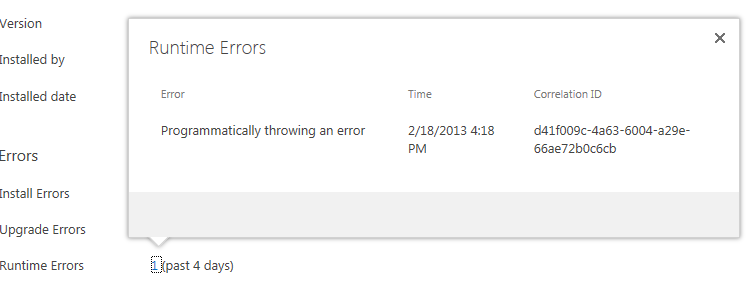
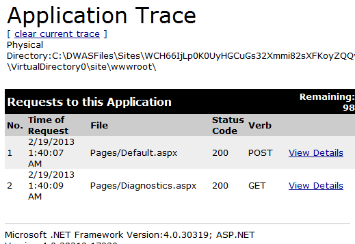
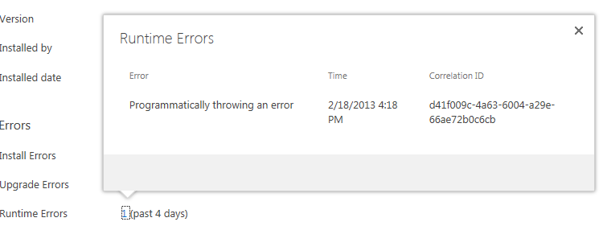
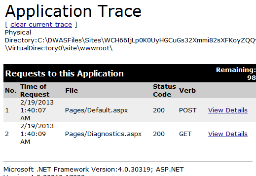

<font color="DarkGray"></font>


Learn how to add custom errors to the app monitoring system and enable runtime request tracing for apps for SharePoint.
This sample app for SharePoint shows how to add custom errors to the app monitoring system and how to enable runtime request tracing for the app.
| Tip |
|---|
|
Before working with this sample, read
Add troubleshooting instrumentation to an app for SharePoint so that you can understand its intended use.
|
Description
The default.aspx page of the app appears after you install and launch the app. It contains a button labeled
POPULATE DATA.
Figure 1. Default page of the app
Pressing the button displays the titles of all the lists on the host web and s a link to a diagnostics page.
Figure 2. Data and link to diagnostics page
The button's click handler also throws an exception. The user doesn't see this exception because the code catches it and logs it using the
LogCustomRemoteAppError. After a wait of about 10-15 minutes, you can see this custom error on the
App Details page for the app. You can open the
App Details page by clicking the ellipsis button (…) beside the app in the
Site Contents page of the host web. On the callout that opens, click
Details. Beside Runtime Errors, the number of runtime errors appears, as shown in Figure 3.
Figure 3. App Details page
This number is a link. Choose this link to open a callout that gives details about the error.
Figure 4. Runtime errors callout
Return to the start page of the app, or relaunch the app and choose the
POPULATE DATA button again. Choose the DIAGNOSTICS PAGE link. On the page that opens, there is a
TURN ON TRACING button and a disabled link to the trace log. When the page loads a call to the
Warn method, it throws a warning that says "This trace warning was thrown when the diagnostics page loaded.". However, this warning does not appear anywhere unless tracing is turned on. Click the button to turn on tracing and enable the link. The link opens
the web server's trace.axd file, which logs details about requests to the server. The list is initially empty. Navigate back to the apps start page and choose the
DIAGNOSTICS PAGE link again. Notice that when it opens, the button label has changed to
TURN OFF TRACING. Do not press it. Choose the
Trace Log link to open the trace log. Because tracing is now turned on, there are some entries in the log.
Figure 5. The web server's trace log page
Choose the View Details link for a row in which the Diagnostics.aspx page was opened. Familiarize yourself with all the information that was logged about the request. Notice in particular that the custom warning appears in red.
Users can then send the information on this page to the technical support personnel for the app.
Figure 6. Details of the GET request for the diagnostics page
Deviations from best practices
The sample is focused on demonstrating an app with runtime instrumentation, so it does not conform to all the good practices that should be used in a production app. Among other things, note the following.
-
The app has a visible link to a diagnostics page where request tracing can be turned on and off. In a production app, users should not be able to turn on tracing except under the direction of someone from the technical support for the app because tracing can significantly reduce performance (for all users of the app, not just the person who turns it on). The best practice is that users should be able to open the diagnostics only by manually entering its URL in the address box of their browser. They should get this URL only from tech support.
-
The app has a way for users to turn off tracing, but there is no way to automatically turn it off if they neglect to turn it off. Because tracing can reduce performance, the best practice is to incorporate logic that will automatically turn off tracing after a certain period of time.
-
The app has minimal exception handling.
-
The app uses C# code on the server to toggle the visibility of some controls. Performance might be better if JavaScript was used for this purpose, thereby reducing requests to the server
Prerequisites
This sample requires the following:
-
Visual Studio 2012 and SharePoint development tools in Visual Studio 2012.
-
Web Deploy 2.0 installed on the computer with Visual Studio. The version of Visual Studio and its SharePoint tools available for SharePoint 2013 should install this automatically.
-
A SharePoint Online (Office 365) Developer Site. For more information, see Sign up for an Office 365 Developer Site. This is an autohosted app, and it can only be installed on a SharePoint Online Developer Site.
Key components
-
Instrumentation project, which contains the AppManifest.xml file.
-
InstrumentationWeb project.
-
Default.aspx file, which contains the HTML and ASP.NET controls for the user interface of the app.
-
Default.aspx.cs file, which contains the C# code that uses reads SharePoint data, throws an exception, and catches and logs the exception
-
Diagnostics.aspx file, which controls the user interface for turning on tracing and viewing the trace log.
-
Diagnostics.aspx.cs file, which contains the C# code that turns tracing on and off.
-
ChromeLoader.js file, which gives the web application's pages the look and feel of the SharePoint host web.
-
Web.config, web.debug.config, and web.release,config files. (The web.config file that is packaged with the app is a merger of web.config and either web.debug.config or web.release.config.)
-
Configure the sample
Open the Instrumentation.sln file in Visual Studio 2012. In the
Properties pane of Visual Studio, change the Site URL property of the app for SharePoint project in Visual Studio to the absolute URL of your SharePoint 2013 developer test site on SharePoint Online (for example,
https://microsoft555.sharepoint.com/).
Deploy the sample
Follow these steps to deploy the sample.
-
Choose the Instrumentation project in Solution Explorer (not the top node for the whole Visual Studio solution). On the menu bar, choose Publish. (Do not choose the F5 key.)
-
In the Publish dialog box, choose the Finish button. The resulting app package file has an .app extension and is saved in the app.publish\version_number subfolder of the bin\Debug folder of the Visual Studio project.
Install and test the sample
-
Sign in to your SharePoint Online 2013 site as a tenant administrator.
-
At the top of the page, choose Admin, SharePoint.
-
On the SharePoint Administration Center page, choose apps, and then choose App Catalog. If you haven't already created an app catalog site collection, you will be prompted to create one.
-
After the app catalog site collection is created, open it, and select Apps for SharePoint.
-
On the App Catalog page, choose the new item link.
-
On the Add a document form, browse to your app for SharePoint package and choose the OK button. A property form for new items opens.
-
Fill out the form as needed and choose the Save button. The app for SharePoint is saved in the catalog.
-
Browse to any website in the tenancy and choose Site Contents to open the Site Contents page.
-
Choose add an app, and on the Your Apps page, find the app. If there are too many to scroll through, you can enter any part of the app title (Instrumentation) into the search box.
-
When you find the app, choose the Details link beneath it, and then on the app details page that opens, choose Add It.
-
You are prompted to grant permissions to the app. Choose Trust It.
-
The Site Contents page opens and the app is listed. For a short time, a message below the title indicates that it is being added. When this message disappears, you can choose the app icon to launch the app. (You may need to refresh the page to make the message disappear.)
-
Exercise the app as described in the sample description above.
Change log
First release: February 2013
Related content
Contact Info
DocThis@microsoft.com

  
 